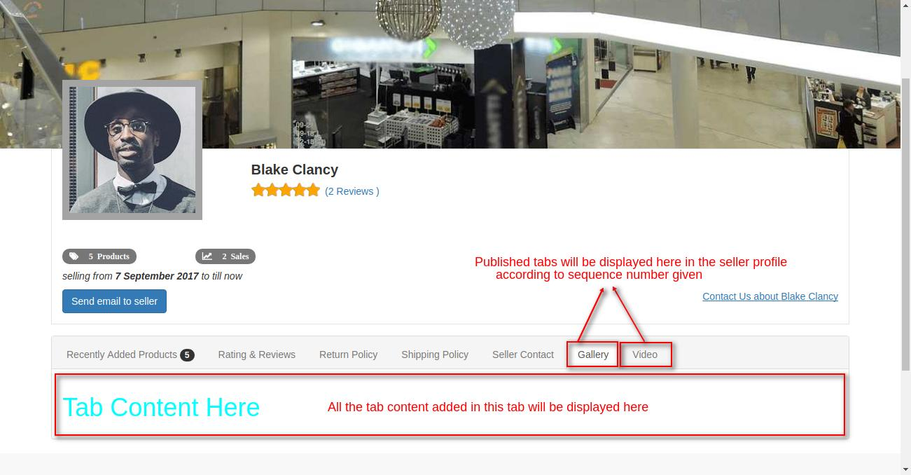

Odoo Marketplace Seller Profile Tabs
Now Provide Additional Details in Seller Profile Using Tabs.
Features
- Admin can create Tabs for the Seller Profile for any seller of Marketplace.
- Sellers can create Tabs for their own Profile and publish in website.
- Admin will create different types of tabs name and make it active to be used by seller .
- Admin can set the configuration whether to allow seller to create tabs for their own profile or not.
- All the tabs created for a particular seller will be displayed in website in seller profile.
Website View

Seller Side View
Admin Side View

Configuration View
Complimentary Support
You will get 90 days free support for any doubt, queries, and bug fixing (not including data recovery) or any type of issue related to this module.